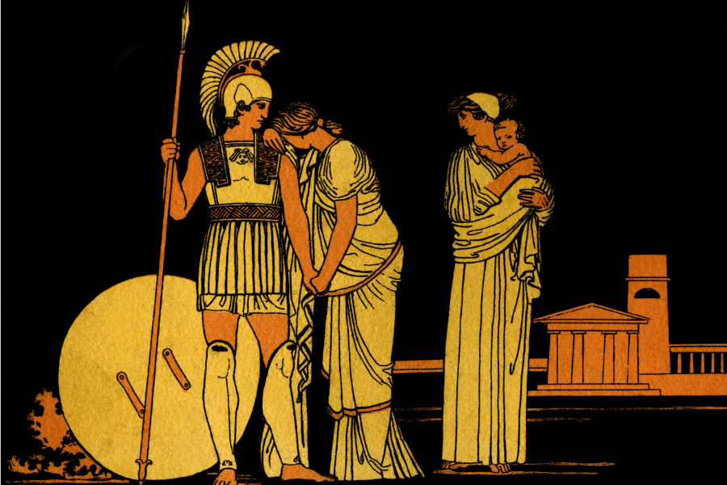
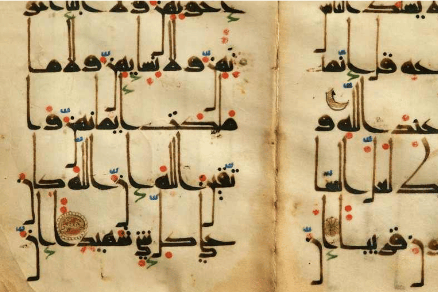

World Literature
World literature represents a vast array of narratives, philosophies, and artistic expressions that span different cultures and historical contexts. This portfolio aims to explore twelve significant literary traditions, highlighting their seminal works, themes, and enduring influences on global literature. By understanding these literatures, we can appreciate the diverse ways in which humanity has expressed its thoughts, emotions, and values throughout time.
Let's learn more about World Literature!
Mesopotamia
Mesopotamian literature has influenced later legal, religious, and literary traditions, contributing to the development of narrative structures and moral concepts in ancient and modern civilizations.
- Key Works
- Themes
The Code of Hammurabi: This legal text is essentially a snapshot of how justice worked in ancient Mesopotamia. It’s more than just laws; it’s a reflection of their ideas about morality, social order, and divine authority.
The Epic of Gilgamesh: This is one of the oldest known stories in the world. It follows Gilgamesh, the king of Uruk, on his journey to understand life and death after losing his friend Enkidu. The themes of friendship, mortality, and the search for meaning are so timeless that they still resonate today.
Justice and Divine Order: There’s a strong focus on law and hierarchy, where gods play a huge role in deciding the fate of humans, almost as if everything is preordained by the divine.
Mortality and Power: These works often reflect on the inevitability of death and the limits of human power, especially in comparison to the gods who seem to control everything.
Greek
Greek literature pretty much laid the groundwork for Western storytelling. The way it explores human nature, ethics, and the divine influenced everything from Roman literature to modern philosophy and drama.
- Key Works
- Themes
The Iliad: This epic poem captures the human experience of war, particularly the Trojan War, but what’s striking is how it digs into themes like pride, fate, and the gods’ interference in human affairs.
The Odyssey: Odysseus’ long journey home is not just about adventure; it’s really about resilience and cleverness. It explores the idea of longing for home and the struggles of both man and the gods.
Fate and Human Nature: Greek literature is obsessed with the idea of fate. Characters often battle their destiny, and it’s fascinating to see how their flaws bring them closer to it.
Heroism and Morality: Heroes in Greek works are flawed, and their struggles with morality, honor, and pride make them feel incredibly real, even by today’s standards.
Roman
Roman literature borrowed a lot from the Greeks but added its own take on themes like duty, power, and transformation. Its legacy is seen everywhere, especially in politics and modern narratives about leadership and morality.
Key Works
The Aeneid: Virgil’s Aeneid is about the founding of Rome, but it’s more than just a story about origins—it’s about duty, sacrifice, and the conflict between personal desires and public responsibilities.
Metamorphoses: Ovid’s Metamorphoses is packed with myths, each exploring transformation in some way. It’s almost like a reflection of life’s constant changes, from the mundane to the mythical.
Themes
Duty vs. Desire: In The Aeneid, Aeneas is torn between what he wants and what his duty demands, which is a theme that really resonates with the human condition.
Transformation and Change: Ovid’s Metamorphoses delves into how everything in life is in flux, from people to gods, and how change is inevitable in the world.
Hindu
Hindu literature has shaped spiritual and philosophical thought not just in India but across the world. Its ideas about duty, ethics, and the nature of existence are still influential today in religious and philosophical discourse.
- Key Works
- Themes
The Mahabharata: This epic is so complex, weaving together stories of war, family, and morality. At its core, it’s about the eternal struggle between good and evil and the dilemmas we face in choosing the right path.
The Ramayana: Rama’s quest to rescue Sita isn’t just a heroic adventure. It’s a deep exploration of dharma (duty), loyalty, and the challenges of being righteous in a world filled with challenges and temptations.
Dharma and Karma: Hindu literature is centered on the idea that everyone has a role to play, and how well you fulfill it affects your future. It’s a profound way of looking at life’s purpose and moral responsibility.
Spiritual Quest: Whether through epics or philosophical texts, there’s a constant search for spiritual understanding and harmony with the universe, making it feel deeply introspective.
Chinese
Chinese literature has had a lasting impact on both Eastern and Western philosophies, especially with its focus on ethics, governance, and the relationship between the individual and society.
- Key Works
- Themes
Tao Te Ching: This philosophical text by Laozi focuses on the concept of the Tao, or “the way,” emphasizing simplicity, humility, and harmony with nature. It feels like a quiet reflection on life’s deeper meanings.
The Analects: Confucius’ teachings in The Analects are all about ethics, proper behavior, and the importance of relationships in society. It’s interesting how much it values balance, respect, and social order.
Harmony and Balance: There’s a real focus on balance in Chinese literature, whether it’s between humans and nature in Taoism or between personal desires and social roles in Confucian thought.
Ethics and Relationships: Much of the literature revolves around how people should behave—whether in family, society, or governance—and how maintaining proper relationships is key to a harmonious life.
Arabian
Arabian literature, particularly One Thousand and One Nights, has influenced global storytelling traditions. Its tales of wonder, wisdom, and morality have been retold and reinterpreted across cultures for centuries.
- Key Works
- Themes
The Qur’an: It’s more than a religious text; it’s a literary masterpiece that offers moral guidance and spiritual insight. The Qur’an’s poetic language and powerful messages about justice, mercy, and faith stand out.
One Thousand and One Nights: This collection of stories, including tales like Aladdin and Sinbad, mixes fantasy with moral lessons, and it’s fascinating how each story weaves into the next, like an endless cycle of imagination.
Morality and Faith: Arabian literature, especially the Qur’an, often centers around questions of justice, morality, and how to live a good life, blending spiritual guidance with everyday ethics.
Storytelling Tradition: There’s this love of storytelling in Arabian literature that’s passed down through generations, with tales that reflect cultural values and timeless human experiences.
Egyptian
Egyptian literature has influenced religious and funerary traditions in both ancient and modern cultures, particularly with its focus on death, immortality, and divine rule.
Key Works
The Book of the Dead: This text is like a guide to the afterlife, filled with spells and instructions for navigating the challenges that come after death. It shows how central death and the afterlife were in Egyptian belief.
Pyramid Texts: These ancient religious texts, inscribed on tomb walls, speak of the journey to the afterlife and the relationship between the pharaohs and the gods, showing how deeply religion permeated daily life.
Themes
Death and the Afterlife: Egyptian literature is obsessed with the afterlife, with a focus on how to prepare for it and ensure a good journey through the underworld.
Divine Kingship: There’s a strong emphasis on the connection between rulers and gods, reflecting the belief that pharaohs were divine or semi-divine beings tasked with maintaining cosmic order.
Japanese
Japanese literature has left a profound mark on both Eastern and Western storytelling, especially with its focus on subtlety, emotion, and the transient beauty of life.
- Key Works
- Themes
The Tale of Genji: This novel is often called the world’s first true novel, and it’s fascinating for its detailed portrayal of court life, love, and the complexities of human emotions. Genji’s romantic escapades are a window into Heian Japan.
Kokinshu: This poetry collection feels like a mix of nature and emotion, with themes of love, longing, and the impermanence of life. The way it captures fleeting moments is almost meditative.
Impermanence (Mono no Aware): Japanese literature often reflects on the beauty of transient moments. It’s about appreciating life’s fleeting nature, something you see in everything from their poetry to longer works like The Tale of Genji.
Nature and Emotion: Many works are tied to the seasons and the natural world, using nature as a metaphor for human emotions, particularly love and longing.
Germanic
Germanic literature has heavily influenced modern fantasy and adventure genres, with themes of heroism, fate, and honor continuing to resonate in contemporary storytelling.
- Key Works
- Themes
The Poetic Edda: This collection of Norse myths gives you a feel for how the Vikings saw their world—filled with gods, giants, and epic battles. It’s not just mythology, but also moral lessons about fate, honor, and death.
The Nibelungenlied: This Germanic epic is filled with tragedy, betrayal, and revenge. It’s a dramatic story that shows how even the strongest heroes are vulnerable to the forces of fate and human weakness.
Heroism and Fate: There’s a constant focus on the hero’s struggle against fate. No matter how strong or brave they are, they can’t escape their destiny, making these stories feel both epic and tragic.
Loyalty and Revenge: A lot of the literature reflects a harsh world where loyalty is everything, and betrayal often leads to tragic consequences, which makes you feel the weight of personal and social obligations.
French
French literature has influenced both modern novels and political thought, with its focus on individual freedom, social justice, and the complexity of human emotions.
- Key Works
- Themes
The Song of Roland: This epic poem highlights themes of honor, bravery, and feudal loyalty. Roland’s tragic death in battle becomes a symbol of knightly virtue and the fight for a greater cause.
Les Misérables: Victor Hugo’s epic novel tackles justice, poverty, and redemption. It’s like a deep dive into the human soul, showcasing the extremes of suffering and the possibility of hope in a broken world.
Romanticism and Realism: French literature swings between intense emotional exploration and stark realism, making it a fascinating study of human nature, love, and social constraints.
Social Justice: Especially in works like Les Misérables, there’s a strong emphasis on inequality, redemption, and the fight for a better society, which still feels relevant today.
English
English literature has had a massive global impact, shaping everything from modern novels to philosophical debates on human nature and society’s role in shaping individuals.
Key Works
Beowulf: This epic Anglo-Saxon poem is all about heroism, bravery, and the inevitable struggle against death. Beowulf’s battles with monsters are symbolic of larger human conflicts with fate.
Pride and Prejudice: Jane Austen’s novel looks at love, class, and societal expectations with wit and irony. It’s not just a romance; it’s a commentary on the rigid social structures of the time.
Themes
Human Conflict and Morality: English literature often deals with inner conflict—whether it’s Hamlet wrestling with revenge or Elizabeth Bennet dealing with class and love. It’s about exploring the complexity of human choices.
Social Critique: Many works, especially from the Victorian era, serve as a commentary on societal norms, questioning issues like class, gender, and morality in a changing world.
Italian
Italian literature, with its focus on morality, power, and human nature, has had a lasting impact on both literary and philosophical traditions across the world.
- Key Works
- Themes
The Divine Comedy: Dante’s epic journey through Hell, Purgatory, and Heaven is as much a reflection on human morality as it is an exploration of divine justice. The vivid imagery and philosophical depth make it timeless.
The Decameron: Boccaccio’s collection of tales paints a broad picture of human life in the 14th century. It’s filled with humor, tragedy, and moral lessons, often exploring the complexities of love and fate.
Moral and Spiritual Exploration: Italian literature, especially with works like The Divine Comedy, is always searching for deeper truths about the human soul, sin, and redemption.
Power and Human Nature: Works like The Prince reflect on the darker sides of politics and leadership, exploring how power operates in the real world versus idealistic notions of governance.